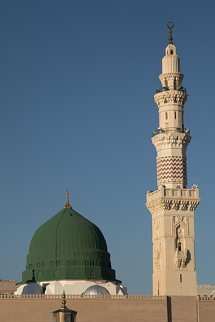
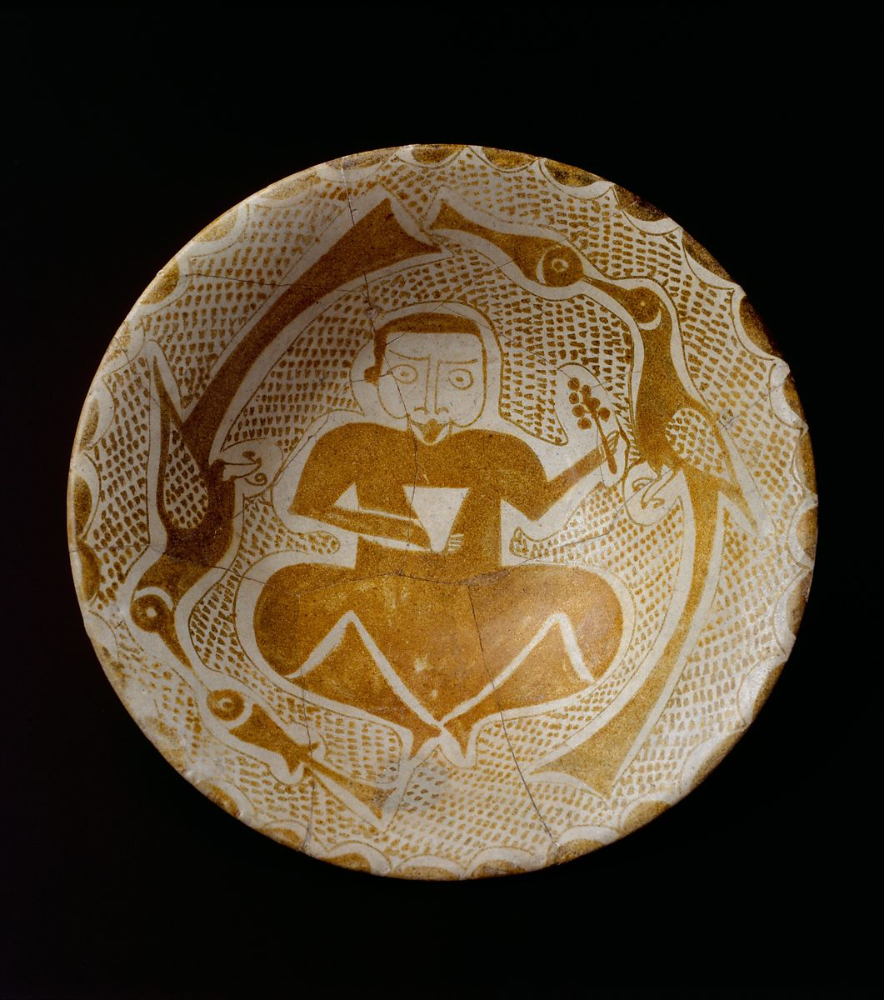

At the top of the page, we have different links for things we think you should, do, places you should go and more.
Baghdad was established in 8th century and was an economic center until its fall in about 1200 AD. Baghdad was established because the Abbasids wanted a new capital, and to increase their dawla.
Hās̲h̲imiyya was an option, as was Al-Manṣūr. However both were vunerable to attackers. Pietro della Valle, the leader, was looking for a new city, and wanted it to succeed Babylon and all the other big cities at that time.
He chose the site of Baghdad because it had a fertileplain, was near a river and on the Kurrasan road. It had a good temperature and not a major mosquito problem.
Baghdad is a great place to visit because there are merchants, who sell unique items such as a Bowl depicting a Man holding a Cup and Flowering Branch (pictured below)
and has very easy access by boat and by road, being situated on the Kurrasan road. Baghdad is also the home of the Green dome, in the center of the round city,
even featuring a horseman on the top of it. Being a whole 48.36 meters high, come see it quick before it falls. It was most likely struck by lightning.
 Image 1: Note this picture is of the modern day green dome.